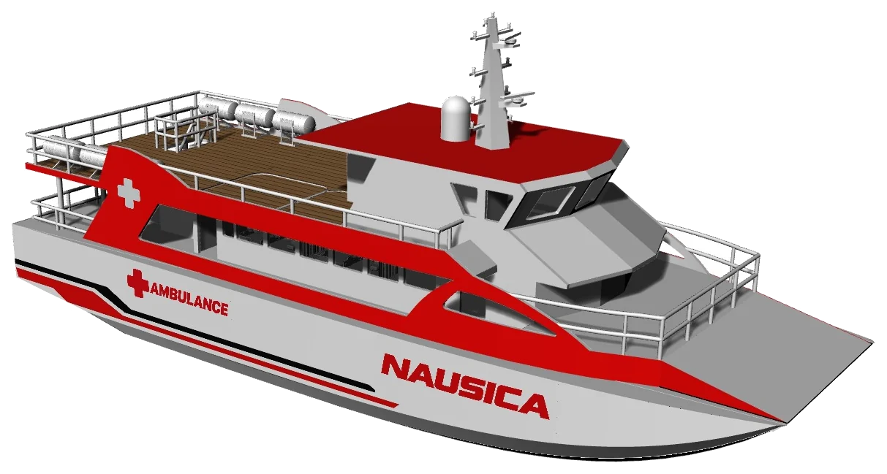
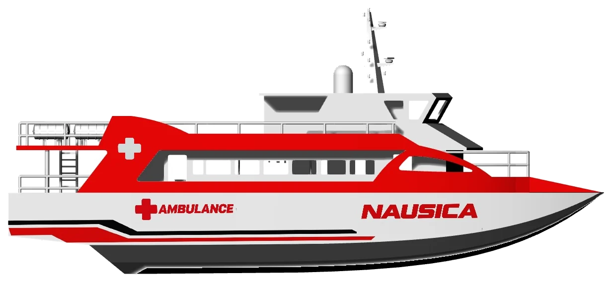
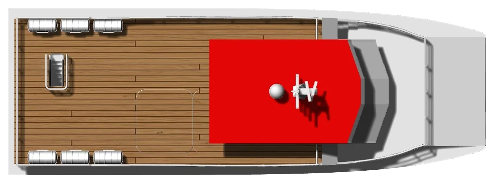
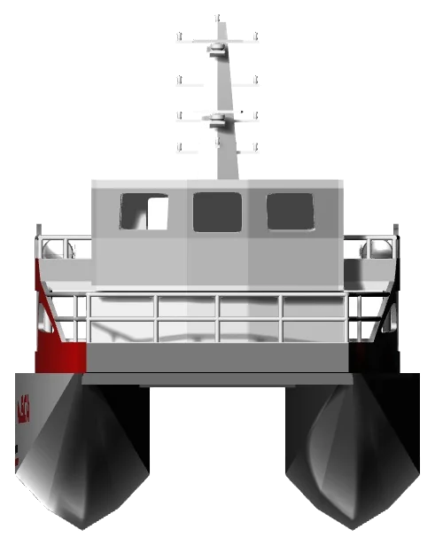
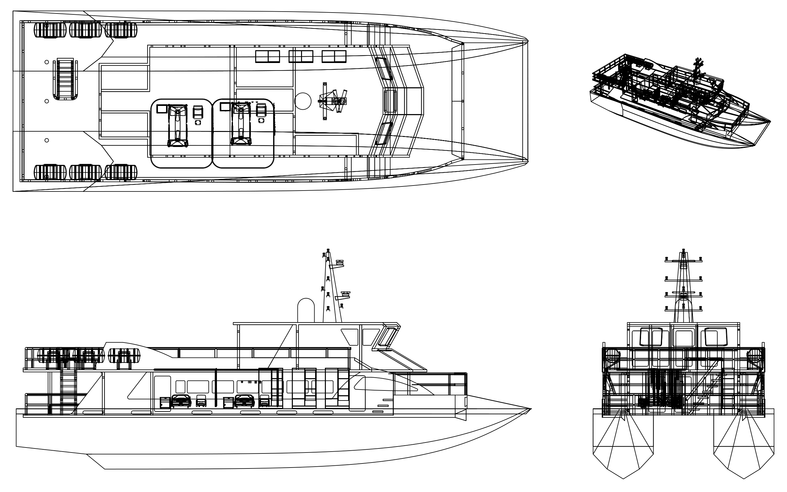
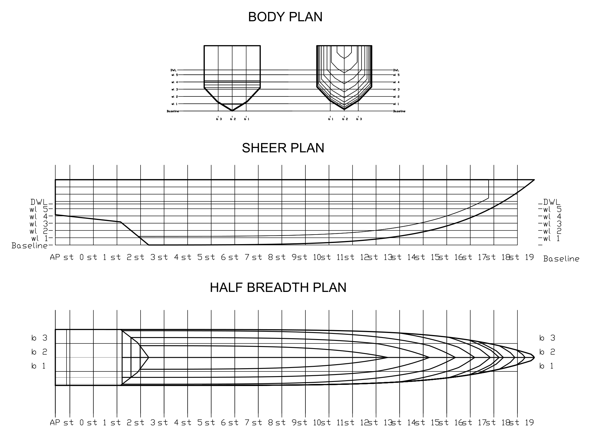

Smart Patient Ticket
Tiket digital berisi identitas, prioritas triase, ringkasan kebutuhan, dan tujuan rujukan pasien untuk menentukan prioritas evakuasi.
Buka demoSampan Maritime Competition 2026 · Tim Poseidon Rise
NAUTICAL ADVANCED UNIT FOR SYSTEMIC INTEGRATED CARE
Solusi Evakuasi Medis Darurat dan Rekam Medis Terintegrasi (Electronic Health Record) untuk Wilayah Kepulauan dan Pesisir.

Nusa Tenggara Timur terdiri atas ratusan pulau yang dipisahkan laut berarus kuat. Bagi banyak warga dan wisatawan bahari, kapal adalah satu-satunya jalan menuju rumah sakit rujukan, sementara cuaca laut sering tidak stabil.
Insiden KM Putri Sakinah yang terbalik akibat kondisi laut buruk menunjukkan perlunya evakuasi medis yang cepat dan terkoordinasi di perairan NTT.
Pemantauan kondisi laut dengan peringatan dini, prediksi jalur evakuasi yang aman, dan prediksi pergerakan korban sebagai dukungan keputusan tim penyelamat.
Electronic Health Record menjaga data pasien tetap tersambung dari kapal sampai rumah sakit rujukan, termasuk saat serah terima.
Telemedicine menghubungkan tenaga medis di kapal dengan dokter rujukan selama perjalanan, sehingga keputusan klinis tidak bergantung pada dokter di atas kapal.
Dari pendaftaran pasien di kapal sampai serah terima di rumah sakit. Pilih salah satu komponen untuk membuka demo simulasinya.
Tiket digital berisi identitas, prioritas triase, ringkasan kebutuhan, dan tujuan rujukan pasien untuk menentukan prioritas evakuasi.
Buka demoRekam medis digital: identitas, keluhan utama, alergi, obat, dan tindakan. Data disimpan sementara dan disinkronkan saat jaringan tersedia.
Buka demoKonsultasi video dan pengiriman tanda vital (SpO₂, tekanan darah, EKG) ke dokter rujukan, termasuk pengiriman resep obat secara online.
Buka demoPemantauan kondisi laut dengan peringatan, prediksi jalur evakuasi yang aman, dan prediksi pergerakan korban di sekitar Selat Padar.
Buka demoPanel tren tanda vital selama perjalanan untuk membantu petugas mengenali perubahan kondisi yang perlu segera dievaluasi.
Buka demoAlur serah terima ke RSUD Komodo atau RS Siloam Labuan Bajo agar tim darat menyiapkan penerimaan pasien lebih awal.
Buka demoIkuti satu kasus contoh, mulai dari tiket pasien di kapal sampai serah terima di IGD. Semua nama, angka, dan pesan di bagian ini adalah simulasi.
Kasus simulasi Wisatawan, 34 tahun, terjatuh di dek kapal wisata di Selat Padar. Kepala terluka dan sempat tidak sadar beberapa detik.
Lambung katamaran dipilih karena stabil secara melintang, geladaknya luas untuk ruang triase dan perawatan, serta hambatannya rendah pada kecepatan operasional.





| Parameter | Nilai | Satuan |
|---|---|---|
| LOAPanjang keseluruhan | 25,6 | m |
| LWLPanjang garis air | 24,16 | m |
| LPPPanjang antara garis tegak | 23 | m |
| BLebar | 12 | m |
| HTinggi | 3,5 | m |
| TSarat | 2,2 | m |
Dimensi merupakan data desain awal. Stabilitas pada kondisi miring, kebutuhan daya, dan kekuatan konstruksi masih perlu dikaji lebih lanjut.
Arsitektur konseptual menghubungkan petugas di kapal, pasien, jaringan komunikasi, dan fasilitas rujukan.
Platform katamaran dengan ukuran utama dari tahap desain awal.
Jaringan dipilih sesuai cakupan di sepanjang rute, dengan penyimpanan sementara saat koneksi terputus.
Smart Patient TicketEHR, disimpan di kapalJaringan seluler/satelit terenkripsiDokter rujukanSerah terima
Coba alurnya langsung di Demo Sistem. Gambaran rancangan proposal, bukan sistem yang sudah terintegrasi atau tervalidasi secara klinis.
Validasi kebutuhan pengguna, desain kapal, alur klinis, dan persyaratan keselamatan.
Prototipe EHR dan telemedicine dengan kontrol privasi dan uji interoperabilitas.
Evaluasi waktu respons, keberhasilan sinkronisasi, keandalan komunikasi, dan keselamatan operasional.
NAUSICA adalah konsep inovasi untuk diskusi, penelitian, dan kolaborasi lintas bidang kesehatan dan kemaritiman.
Form ini menyusun draf pesan untuk Anda salin. Tidak ada data yang dikirim ke server.